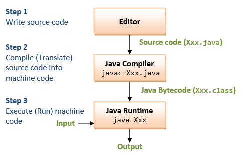

Airline Reservation System
Designed and implemented an extensive database and application to manage flight schedules, ticket bookings, and staff records for an airline.
Database Management for ABC Airline
Developed a comprehensive database to enhance operational efficiency, handling everything from crew scheduling to flight operations.
Object-Oriented Programming Assignments
Executed complex Java projects demonstrating mastery in object-oriented programming.
Git Integration with Eclipse
Managed version control for programming assignments using Git within the Eclipse IDE.